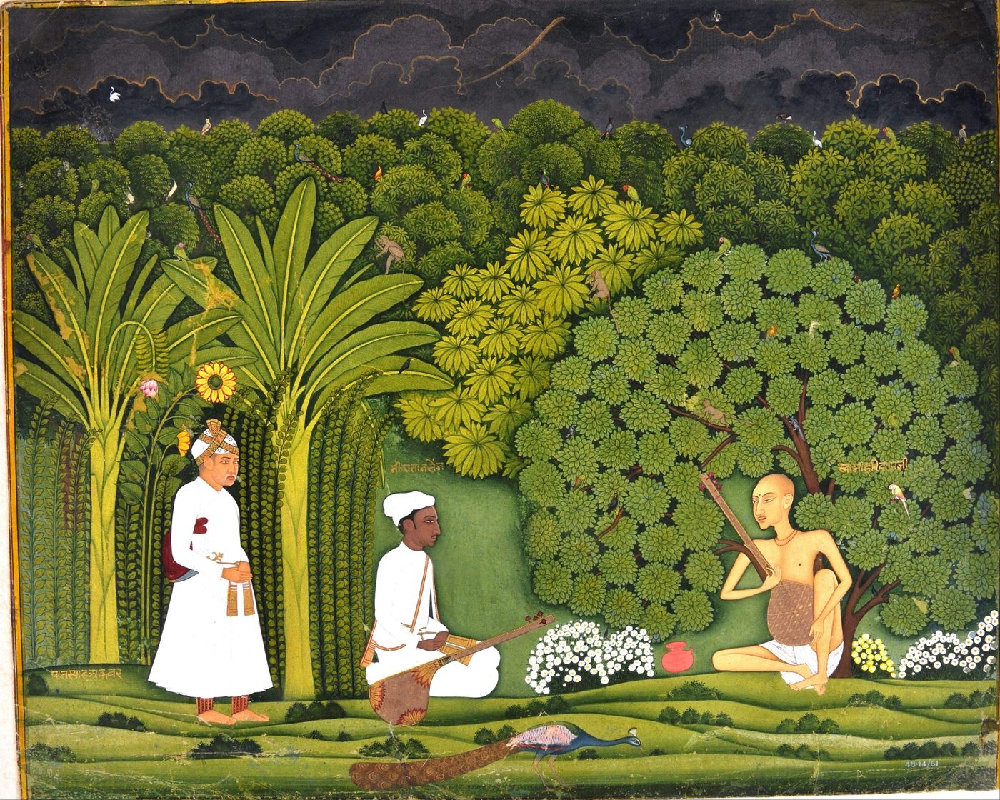
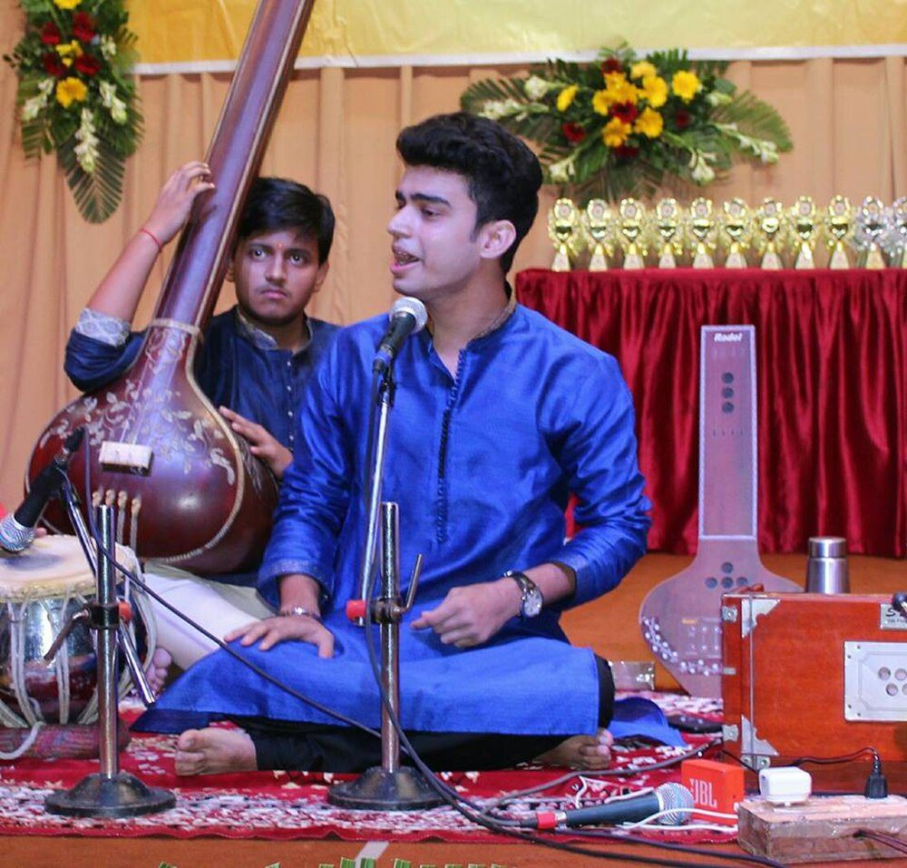

Chapter 7: Hindustani Music¶
“Hindustani” music is the art music of northern and central India and of Pakistan, Bangladesh and Nepal: the music of dhrupad and khayāl, of ṭhumrī and ghazal, of the sitār, sarod, sāraṅgī, bānsurī and tablā. It shares the theory of rāga and tāla with the Karnatak music of the south (Chapters 4, 5 and 8), but its genres, instruments, repertoire and social history are its own. Above all it is the product of a long encounter between the musical cultures of India and those of the Persianate world, carried on for six centuries at the courts of Muslim and Hindu rulers, at Sufi shrines and Hindu temples, in the salons of courtesans and the homes of hereditary musicians, and finally in the concert halls, radio stations and music colleges of the twentieth century. The history comes first, because the genres make sense only within it; then the genres themselves and the concert; and then two great devotional traditions that grew up beside the art music of the courts, the Sufi qawwālī and the kīrtan of the Sikh Gurus.
7.1 History¶
7.1.1 The Sultanate and the Sufis¶
The Turkish and Afghan rulers who established the Delhi Sultanate in the thirteenth century brought with them musicians, instruments and musical ideas from Iran and Central Asia, and the Sufi orders that came with them, above all the Chishtīs, made listening to music (samāʿ) part of their devotional practice. In this world the most celebrated figure was Amīr Khusrau (1253–1325), the Persian poet of the Delhi court and disciple of the Chishtī saint Niẓāmuddīn Awliyāʾ, who wrote also in the vernacular Hindavi and was himself a connoisseur of music (Sharma 2005). Later tradition credited him with an extraordinary range of musical inventions: the qawwālī, the tarānā, the khayāl, several rāgas with Persian names, and the sitār and tablā.
Did Amīr Khusrau invent the sitār and the tablā?
No. None of Khusrau’s own writings, and no source of his time, mentions either instrument. The sitār is first securely documented in the eighteenth century, and Allyn Miner’s study of its history shows that it developed in the eighteenth and nineteenth centuries from smaller long-necked lutes, with the decisive changes in construction and technique made by hereditary musicians in Delhi, Lucknow and elsewhere (Miner 1993). The tablā likewise emerges in the eighteenth century, probably in Delhi, as an instrument for accompanying the newer, lighter genres; James Kippen’s work on the Lucknow tradition traces its early lineages (Kippen 1988). The attribution of both instruments to Khusrau appears in nineteenth-century writing and may owe something to confusion with later musicians of similar name. Even the genres traditionally associated with him (qawl, tarānā, khayāl) are ascribed to him by later tradition, not by contemporary evidence; what is certain is his stature as a poet and his place in the Chishtī culture of samāʿ (Sharma 2005; Bor et al. 2010).
7.1.2 Dhrupad and the regional courts¶
In the fifteenth and early sixteenth centuries the regional sultanates and Rajput kingdoms of the north were centres of musical patronage. The Tomar king of Gwalior, Mān Siṃh (r. 1486–1516), is traditionally associated with the rise of dhrupad, a genre of song in the vernacular Braj Bhāṣā set to rāga and tāla in a formal four-part structure. Gwalior became the most famous school of singers in north India, and its musicians were sought by other courts (Sanyal and Widdess 2004).
7.1.3 The Mughal court¶
Under the Mughals, and especially at the court of Akbar (r. 1556–1605), dhrupad became the most prestigious form of art music. Akbar’s chronicler Abū’l Faẓl lists the musicians of the court, Hindu and Muslim, from Gwalior, Kashmir, Iran and Central Asia; the most famous was Tānsen (d. 1589), who came to Akbar from the court of Rewa and around whom legends gathered of lamps lit and rain brought by his singing. In one popular legend, Akbar, dressed as a commoner, went with Tānsen to Vrindavan to hear the ascetic singer Svāmī Haridās, whom tradition makes Tānsen’s teacher (Figure 7.1). Tānsen’s descendants, the Seniyas, were for centuries the most prestigious lineage of north Indian music. Mughal emperors and nobles patronised musicians, collected and commissioned treatises, and had music depicted in painting; Bonnie Wade’s study of Mughal paintings shows the instruments and ensembles of the court in detail (Wade 1998). Writers in Persian, beginning in the sixteenth and seventeenth centuries, translated and adapted Sanskrit musical theory and described contemporary practice, creating a bilingual music theory that shaped Hindustani music’s understanding of itself (Schofield 2010; Bor et al. 2010).


7.1.4 The eighteenth and nineteenth centuries¶
The decline of Mughal power in the eighteenth century did not mean the decline of music. At the court of Muhammad Shāh “Rangīle” (r. 1719–1748) in Delhi, khayāl, a more flexible and ornate genre than dhrupad, rose to prominence, associated especially with the court musician Niyamat Khān, who composed under the pen-name Sadāraṅg, and his relative Adāraṅg. As Delhi declined, musicians dispersed to the successor states — Awadh (Lucknow), Rampur, Gwalior, Jaipur, Baroda, Hyderabad, the Maratha courts and the zamindari households of Bengal — and to the commercial cities. In Lucknow under the nawabs, and especially under Wājid ʿAlī Shāh (r. 1847–1856), the light classical ṭhumrī and the dance of Kathak flourished among courtesans (ṭawāʾif) and hereditary musicians (Chapter 16). The sitār, sarod and tablā took their modern forms in this period, and the hereditary musicians of the period founded the stylistic lineages (gharānās) of modern Hindustani music (Neuman 1980; Miner 1993).
7.1.5 Musicians and their communities¶
For most of this history, art music in north India was the hereditary profession of particular communities, most of them Muslim: the kalāwants, who claimed descent from court dhrupad singers; the ḍhāḍhīs and mirāsīs, who were often accompanists and genealogists; and the qawwāls of the Sufi shrines. Professional women singers and dancers — the courtesans, whose households trained girls in music, dance and poetry — were the principal performers of ṭhumrī, dādrā and ghazal, and many of the great singers of the early twentieth century came from this background. Brahmin and other Hindu musicians also practised, and Hindu temples, especially the Kṛṣṇa temples of the Puṣṭimārga sect, maintained their own traditions of dhrupad-style singing (havelī saṅgīt). Daniel Neuman’s study of the social organisation of Hindustani music describes the distinction, still important in the twentieth century, between soloists and accompanists, and the role of kinship and discipleship in the transmission of the art (Neuman 1980).
7.2 Writing about Music in Persian¶
For more than five centuries the art music of north India was written about in Persian as well as in Sanskrit and the vernaculars. Historians who looked for the history of Indian music only in Sanskrit long neglected these writings; they are now recognised as some of the most important evidence for the music of the period between Śārṅgadeva and the nineteenth century (Schofield 2010; Bor et al. 2010).
The earliest known Persian treatise on Indian music, the Ghunyat al-Munya, was compiled in 1374–75, in the reign of the Tughluq sultan Fīrūz Shāh. Drawing on Sanskrit sources and on the knowledge of practising musicians, it explains the Indian concepts of note, rāga, tāla and instrument, and the qualities expected of singers, for Persian-reading patrons who wished to understand the music they heard and paid for. Similar works followed at the courts of the sultanates, among them a treatise associated with the court of Sikandar Lodī of Delhi (r. 1489–1517). These works were not simply translations: their authors selected, explained and compared, and they record features of the music of their own time.
Under the Mughals the literature grew. Abū’l Faẓl’s Āʾīn-i Akbarī (1590s) lists the musicians of Akbar’s court and describes the genres and instruments of Hindustani music. The reign of Aurangzeb (r. 1658–1707), often said to have been hostile to music, in fact produced two of the most important works: Faqīrullāh’s Rāg Darpan (1666), which adapts a Hindi treatise ascribed to the court of Mān Siṃh Tomar of Gwalior and adds an account of the musicians of the author’s own day; and Mīrzā Khān’s Tuḥfat al-Hind (c. 1675), an encyclopaedia of Indian learning composed for a Mughal prince, with long sections on music and dance. Katherine Butler Brown (now Schofield) has shown that the emperor’s personal renunciation of music late in his reign did not amount to a ban, and that music continued to flourish in the households of the nobility (Brown 2007). In the eighteenth century Dargāh Qulī Khān’s account of Delhi under Muhammad Shāh, the Muraqqaʿ-i Dihlī, describes the singers, instrumentalists, dancers and courtesans of the city with an observer’s eye; in the nineteenth century Muḥammad Karam Imām’s Maʿdan al-Mūsīqī (1856) describes the musical world of Awadh under Wājid ʿAlī Shāh.
The Persian sources show that Mughal connoisseurs, Muslim and Hindu, treated Hindustani music as a learned art with its own theory, canon and great masters; that they integrated the Sanskrit categories — the six rāgas and their rāgiṇīs, the śrutis and the tālas — with the aesthetic vocabulary of Persian literature; and that they recorded the names, lineages and genres of musicians in a way the Sanskrit texts seldom did. Schofield has argued that the elite of the Mughal period carried out its own “classicisation” of music, centuries before the nationalist reformers of the twentieth century, and that the reformers’ neglect of these sources was part of their project of giving Indian music a purely Sanskrit history (Schofield 2010).
7.3 The Gharānās¶
A gharānā (from ghar, “house”) is a stylistic lineage, centred on a family of hereditary musicians and their disciples, distinguished by its approach to voice production, the treatment of rāga and composition, and its repertoire of compositions. The term came into common use only in the late nineteenth and twentieth centuries, when musicians who had left their patrons’ courts needed to establish their credentials in a wider market; Neuman argues that a gharānā required at least three generations of distinguished musicians and a recognisable style (Neuman 1980). Table 7.1 lists the principal vocal gharānās of khayāl.
| Gharānā | Founding figures | Characteristics (in brief) |
|---|---|---|
| Gwalior | Haddu Khān and Hassu Khān (19th c.) | Regarded as the oldest khayāl lineage; balanced, straightforward exposition of composition |
| Agra | Ghagge Khudā Bakhsh (19th c.); later Faiyaz Khan (1886–1950) | Strong dhrupad and dhamār influence; nom-tom ālāp; rhythmic play with the text |
| Kirana | Abdul Karim Khan (1872–1937), Abdul Wahid Khan | Slow, note-by-note unfolding of the rāga; emphasis on tone and intonation |
| Jaipur–Atrauli | Alladiya Khan (1855–1946) | Complex, rarely heard rāgas; intricate, interwoven tāns |
| Patiala | Ali Bakhsh and Fateh Ali Khan (19th c.) | Rapid, florid tāns; ṭhumrī |
| Rampur–Sahaswan | Inayat Hussain Khan (1849–1919) | Tarānā; synthesis of Gwalior and Rampur styles |
Instrumental music has its own lineages: the Seniya descendants of Tānsen, who played the bīn (rudra vīṇā) and rabāb; the Imdadkhani lineage of sitār, named after Imdad Khan (1848–1920) and continued by Vilayat Khan (1928–2004); the Maihar lineage of Allauddin Khan, whose pupils included his son Ali Akbar Khan (sarod, 1922–2009), his daughter Annapurna Devi (surbahār, 1927–2018) and Ravi Shankar (sitār, 1920–2012); and the tablā gharānās of Delhi, Ajrāḍā, Lucknow, Farrukhābād, Banāras and the Punjab (Chapter 5).
7.4 Regional Centres¶
The gharānās bear the names of places, and the history of Hindustani music is in large part a history of regional centres, each with its own patrons, genres and audiences (Bor et al. 2010; Neuman 1980).
Gwalior and Rampur. Gwalior, the home of dhrupad under Mān Siṃh Tomar, remained a centre under the Scindia rulers in the nineteenth century, when the khayāl singers associated with Haddu and Hassu Khān made it the starting point of most later khayāl lineages. The nawabs of Rampur, in Rohilkhand, patronised the descendants of Tānsen; the bīn player Wazir Khan of Rampur was the principal teacher of Allauddin Khan, through whom the Seniya tradition of instrumental music passed to the Maihar lineage.
Bengal. In Bengal a tradition of dhrupad took root at Bishnupur in the eighteenth century. After the annexation of Awadh in 1856, Wājid ʿAlī Shāh lived in exile at Metiabruz, on the edge of Calcutta, until his death in 1887, and his household made the city a centre of ṭhumrī, Kathak, the sarod and the tablā. The zamindars and merchants of Calcutta, among them members of the Tagore family, patronised musicians, held music conferences and collected instruments (Chapter 10), and the Bengali song traditions of Rabindranath Tagore and Kazi Nazrul Islam drew freely on rāga.
Banaras. Banaras, a city of temples, pilgrims and patrons, was a centre of ṭhumrī, dādrā and the seasonal songs, of a tablā gharānā and of the śahnāī; Siddheshwari Devi, Girija Devi and Bismillah Khan carried its music into the twentieth-century concert hall.
Maharashtra and northern Karnataka. From the late nineteenth century khayāl took deep root in western India. Balkrishnabuwa Ichalkaranjikar brought the Gwalior style to Maharashtra; Alladiya Khan settled at the court of Kolhapur and later in Bombay; Abdul Karim Khan made his home at Miraj, whose annual festival at a Sufi shrine became a gathering of musicians. Bombay’s merchants and music circles, the Marathi musical theatre and the schools of the Gandharva Mahavidyalaya created a large audience, and the towns of the Dharwad region of northern Karnataka produced an extraordinary number of singers of the Kirana and Jaipur–Atrauli styles, among them Sawai Gandharva, Mallikarjun Mansur, Gangubai Hangal and Bhimsen Joshi. By the mid-twentieth century western India had become, with Bengal, the main home of Hindustani vocal music (Bakhle 2005).
The Deccan. The sultanates of the Deccan had their own courtly culture of music. Ibrāhīm ʿĀdil Shāh II of Bijapur (r. 1580–1627) composed the Kitāb-i Nauras, a collection of songs in Dakhni set to named rāgas, opening with praise of Sarasvatī as well as of the Sufi saints; the Qutb Shahi court of Golconda and later the court of the Nizams of Hyderabad patronised north Indian musicians.
The Punjab. The Punjab was the home of the Patiala and Shāmcaurāsī lineages, of the ṭappā, of Sufi music and of Sikh kīrtan. The Harivallabh festival at Jalandhar, held at a shrine since the late nineteenth century, is among the oldest continuing music festivals in India; after 1947 the musicians of western Punjab continued their traditions in Lahore and elsewhere in Pakistan (below).
7.5 Dhrupad¶
Dhrupad (from Sanskrit dhruvapada, “fixed verse” or “refrain”) is the oldest of the genres of Hindustani art music still performed. Its name links it with the dhruva, a song-type of the medieval treatises, but as a genre of vernacular song it emerges in the fifteenth century; claims that it is “Vedic” have no basis. A dhrupad performance begins with a long, unmetred ālāp sung to syllables such as nom, tom, re and nā, which unfolds the rāga slowly from the lower register and gradually acquires a pulse (joḍ) and speed. The composition that follows, accompanied by the barrel drum pakhāvaj, has four sections: sthāyī, antarā, sañcārī and ābhog. The singer elaborates it by reciting the text in rhythmic transformations (layakārī) and dividing it into rhythmic patterns (bol-bāṇṭ), rather than with the rapid melodic runs of khayāl. The principal tālas are Cautāl (twelve beats), Sūltāl (ten), Tīvrā (seven) and, for the related genre dhamār, sung especially at Holī, the fourteen-beat Dhamār (Sanyal and Widdess 2004).
Tradition speaks of four styles (vāṇī) of dhrupad — Gauharī, Ḍāgurī, Khaṇḍārī and Nauhārī — associated with musicians or places of Akbar’s time; by the twentieth century the distinctions were largely nominal. Dhrupad declined in the nineteenth century as khayāl took over the courts and concert stages, and was preserved by a few families, notably the Dagars, and by the Mallik family of Darbhanga in Bihar. Its revival from the 1960s owed much to the Dagar brothers — Nasir Moinuddin and Nasir Aminuddin Dagar, and later Nasir Zahiruddin and Nasir Faiyazuddin Dagar — and to the rudra vīṇā player Zia Mohiuddin Dagar (1929–1990), and it now has many younger exponents, among them the Gundecha brothers and Uday Bhawalkar (Sanyal and Widdess 2004).
The texts of dhrupad are in Braj Bhāṣā and include praise of gods and of royal patrons, descriptions of seasons and festivals, and discussions of music itself. Composers included Hindu and Muslim musicians, and Muslim singers sang compositions in praise of Hindu deities as a matter of course.
7.6 Khayāl¶
Khayāl (from Arabic and Persian khayāl, “imagination”) became the principal vocal genre of Hindustani music in the eighteenth and nineteenth centuries. It allows the singer more freedom than dhrupad, with a lighter voice and richer ornamentation, rapid melodic runs (tān) and a larger role for improvisation. A full khayāl performance usually consists of two compositions (bandiś) in the same rāga: a “great” khayāl (baṛā khayāl) in slow tempo, often in Ektāl, Jhūmrā or Tīntāl taken very slowly, and a “small” khayāl (choṭā khayāl) in medium or fast tempo, usually in Tīntāl or Ektāl. Each composition has two parts, the sthāyī, in the lower and middle registers, and the antarā, which rises to the upper tonic. The opening phrase of the sthāyī (the mukhṛā), which leads to the sam, is the refrain to which the singer constantly returns (Ruckert 2004; Wade 1979).
The slow khayāl is developed through a gradual expansion of the rāga (baṛhat or vistār), sung to the words of the text or to vowels, followed by rhythmic play with the words (bol-bāṇṭ, bol-tān), melodic runs on the vowel “ā” (ākār tān) and passages sung to the names of the notes (sargam). The fast khayāl brings faster and more brilliant tāns and tihāīs, and the performance often ends with a tarānā, a fast composition sung to syllables such as tā, nā, dere, tom and dir. The balance of these elements, the treatment of the text, and the speed and shape of the tāns distinguish the gharānās and individual singers. Each singer reconstructs the rāga and the composition afresh at every performance; the composition is a point of departure, not a text to be reproduced (Neuman 1980).
The texts of khayāl compositions, mostly in Braj Bhāṣā and related dialects, are short — often only a few lines — and deal with love and longing, the play of Kṛṣṇa, the seasons, the praise of patrons, saints and gods, and music itself. Many carry the pen-name of their composers, among them Sadāraṅg and Adāraṅg in the eighteenth century and, in the twentieth, the composers of the Agra and Gwalior lineages.
7.7 Ṭhumrī and the Light Classical Genres¶
Ṭhumrī is a genre of love song, in Braj and the eastern dialects of Hindi, whose texts are usually sung in the voice of a woman longing for her lover, often identified with Kṛṣṇa. It developed in nineteenth-century Lucknow and Banaras in the milieu of the courtesans and of the Kathak dancers, for whom it was the main expressive song (Chapter 16). Its musical treatment emphasises the expressive elaboration of the words (bol-banāv), with a freer use of rāga than khayāl: a ṭhumrī may draw on notes from related rāgas and is usually sung in a small group of “light” rāgas such as Khamāj, Kāfī, Bhairavī, Pīlū and Tilaṅg, in tālas such as Dīpcandī, Jat and Kaharvā. Two styles are distinguished: the earlier, more rhythmic bandiś kī ṭhumrī, associated with dance, and the slower bol-banāv kī ṭhumrī developed for listening (Manuel 1989; Perron 2007).
Related genres, often grouped as “light classical” (upaśāstrīya), include dādrā; ṭappā, a fast and intricate genre derived from the songs of Punjabi camel-drivers and refined in the nineteenth century; and seasonal songs such as kajrī and jhūlā for the rainy season, caitī for spring and horī for the Holī festival. The ghazal, the lyric genre of Persian and Urdu poetry, was sung in the courts and salons of north India and became one of the most popular forms of the twentieth century through singers such as Begum Akhtar (1914–1974), Mehdi Hassan of Pakistan and Jagjit Singh.
The singers of ṭhumrī and ghazal in the late nineteenth and early twentieth centuries were mostly courtesans — Gauhar Jan, the first star of the Indian gramophone (Section 23.2), Rasoolan Bai, Siddheshwari Devi and others — and their art was the target of the anti-nautch campaigns that sought to remove women performers of courtesan background from respectable society. Later singers, including Girija Devi and Shobha Gurtu, and scholars such as Peter Manuel and Lalita du Perron, have restored the genre’s history and its debt to these women (Manuel 1989; Perron 2007; Morcom 2013).
7.8 Instrumental Music¶
Hindustani instrumental music developed largely from the eighteenth century, as the sitār, sarod and later the surbahār, santūr and bānsurī entered the concert world (Chapter 10). An instrumental performance usually begins with ālāp, joḍ and jhālā, modelled on the ālāp of the bīn and of dhrupad, followed by one or more compositions (gat) accompanied by the tablā. The early sitār repertoire distinguished the slow Masītkhānī gat, associated with the eighteenth-century musician Masīt Khān, and the fast Razākhānī gat of the nineteenth-century Lucknow musician Ghulām Razā (Miner 1993). The twentieth century saw the development of a “vocal” style of playing (gāyakī aṅg), especially in the sitār of Vilayat Khan, which imitated the phrasing and ornaments of khayāl, and of a fuller, more elaborate approach to ālāp drawing on the bīn tradition, in the Maihar school of Ravi Shankar and Ali Akbar Khan. Instrumentalists such as the śahnāī player Bismillah Khan (1916–2006), the santūr player Shivkumar Sharma and the flautist Hariprasad Chaurasia made concert instruments of instruments once confined to ceremonial or folk use.
7.9 The Hindustani Concert¶
The settings of Hindustani music have changed greatly over the last two centuries. Before the twentieth century most performances took place in the intimate gathering called mahfil or majlis: a room in a palace, a noble’s house or a courtesan’s salon, where a few connoisseurs sat on the floor around the musicians and responded to every phrase. The public concert, ticketed and held in a hall before hundreds or thousands of listeners, spread from the 1910s with the music conferences organised by Bhatkhande and others and became the normal setting after independence. The large music festivals of the twentieth century, such as the Sawai Gandharva festival in Pune (from 1953), brought together many artists over several nights.
A vocal performance in the modern concert is typically accompanied by tablā and by either harmonium or sāraṅgī, with one or two tānpūrās providing the drone (Figure 7.2); a dhrupad singer is accompanied instead by the pakhāvaj. An instrumental performance is accompanied by tablā alone, with a tānpurā or an electronic drone.


The soloist chooses the rāgas, usually in accordance with the time of day, and the evening proceeds from serious rāgas and slow, extended performances to lighter pieces. It is customary, though not obligatory, to end with Bhairavī, sung or played in a ṭhumrī, bhajan or light composition. The accompanists follow the soloist: the sāraṅgī or harmonium player shadows the singer’s phrases a fraction behind and fills the pauses, and the tablā player keeps the ṭhekā, answers the soloist’s rhythmic phrases and, in instrumental performances, takes solo passages of his own.
The audience is part of the performance. Listeners in the mahfil tradition express their appreciation aloud, with exclamations such as vāh and kyā bāt hai, especially at a well-made return to sam or a beautiful phrase, and musicians respond to such recognition. Neuman has described how the hierarchy of the musical world was visible in performance: in where the musicians sat, in who could interrupt whom, and in the deference expected of accompanists to soloists (Neuman 1980). The modern concert hall has formalised the event, but the expectation that listeners will engage actively with the music remains.
7.10 Persianate and Sufi Music: Samāʿ and Qawwālī¶
7.10.1 Samāʿ¶
For the Chishtī order of Sufis, which became the most widespread Sufi order in north India from the thirteenth century, listening to music and poetry in a ritual gathering (samāʿ) was a means of approaching God. The practice was controversial among Muslim jurists, and the Chishtī masters defended it with conditions: the listeners had to be spiritually prepared, the poetry appropriate, and the gathering properly conducted under the authority of a Sufi master. The Chishtī shrines — of Muʿīnuddīn Chishtī (d. 1236) at Ajmer, of Niẓāmuddīn Awliyāʾ (d. 1325) in Delhi, and many others — became centres of devotional music, and the anniversary of a saint’s death (ʿurs) is still celebrated with music (Qureshi 1986).
7.10.2 Qawwālī¶
Qawwālī is the music of the Sufi assembly, performed by a group of hereditary professional singers (qawwāls) led by one or two soloists, with a chorus who clap and repeat refrains, and accompanied today by harmonium and ḍholak or tablā. The name derives from qaul, “saying”, the term for a song setting an Arabic saying of the Prophet, which traditionally opens a samāʿ assembly; the most famous qaul, beginning man kunto maulā, is ascribed by tradition to Amīr Khusrau. The repertoire comprises poetry in Persian, in the Hindavi of the Delhi region and of the east (pūrbī), in Urdu and in Punjabi — praise of God (ḥamd) and of the Prophet (naʿt), songs in honour of ʿAlī (manqabat) and of the saints, and mystical love poetry (ghazal) — by poets from Rūmī and Khusrau to Bulleh Shāh and modern Urdu writers.
Regula Qureshi’s study of qawwālī at Delhi shrines shows that it is music made to serve a spiritual purpose. The singers watch the listeners and adapt the performance to their states: they repeat a line that has moved a listener, insert verses from other poems (girah) to intensify its meaning, and accelerate or prolong the music as a listener enters a state of ecstasy (ḥāl). Listeners present offerings of money (nazrāna) to the singers through the master of the assembly. The music uses rāgas and tālas, often light ones, but its form is shaped by the text and the occasion, not by the rules of art music (Qureshi 1986).
In the twentieth century qawwālī moved from the shrine to the concert stage, the gramophone and the film studio. Pakistani performers such as the Sabri Brothers and Nusrat Fateh Ali Khan (1948–1997) brought it to audiences around the world, and in India it has been performed at shrines, in concerts and in Hindi film. The shrine tradition continues alongside the commercial one, as do other forms of Sufi music in South Asia: the kāfī of the Punjab and Sindh, sung to the poetry of Bulleh Shāh and Shāh ʿAbdul Laṭīf, and the songs of the Bāuls and fakirs of Bengal (Chapter 21).
7.11 Sikh Kīrtan¶
The Sikh tradition is, from its beginning, a tradition of sung scripture. Guru Nānak (1469–1539) composed his hymns to be sung, and according to the traditional accounts travelled with a Muslim companion, Bhāī Mardānā, who played the rabāb while the Guru sang. When the fifth Guru, Arjan, compiled the Ādi Granth in 1604, he arranged its hymns not by author but by rāga, so that the scripture itself prescribes the music of worship; its structure and the liturgy of the gurdwārā are described in Section 9.12 (Mann 2001; Singh 2000).
Singing the hymns (śabad kīrtan) is the central act of Sikh worship, and the history of its musicians is a history of the Punjab’s shared musical culture. For centuries the professional singers at the Harmandir included Muslim rabābīs, who claimed descent from Bhāī Mardānā, as well as Sikh rāgīs; most rabābīs left for Pakistan at the Partition of 1947. Traditional instruments included the rabāb, the bowed sarandā, tāūs and dilrubā, and the pair of drums called jōṛī; in the twentieth century the harmonium became the standard accompaniment. Since the late twentieth century a movement for gurmat saṅgīt has sought to restore the singing of the hymns in their prescribed rāgas and to revive the stringed instruments of the older tradition.
7.12 Other Devotional Music of the North¶
Hindustani art music has always lived alongside, and drawn on, devotional song. In the temples of the Puṣṭimārga sect of Vallabhācārya, centred on Nāthdvārā in Rajasthan, havelī saṅgīt sets the poetry of Sūrdās and the other poets of the aṣṭachāp to dhrupad- and dhamār-style music according to the hours of the day and the festivals of the year. The songs (pad) of Kabīr, Mīrābāī, Tulsīdās and Sūrdās are sung throughout the north as bhajans, in styles ranging from village singing to concert performance. In Maharashtra the Vārkarī pilgrims sing the abhaṅgs of Jñāneśvar, Nāmdev and Tukārām, and the Marathi musical theatre (saṅgīt nāṭak) of the late nineteenth and early twentieth centuries produced a popular semi-classical repertoire (nāṭyasaṅgīt). In Bengal, the songs of Rabindranath Tagore (Rabīndrasaṅgīt) created a distinct art-song tradition that draws freely on rāga, folk song and Western melody. The congregational kīrtan of the Gauḍīya Vaiṣṇavas, with khol drum and cymbals, has deep roots in Bengal and Odisha and is related to the saṅkīrtana of Manipur (Chapter 18) (Henry 1988). These traditions, and the devotional music of the south, are described more fully in Chapter 9.
7.13 The Modern Period¶
7.13.1 Reform, nationalism and the music college¶
In the late nineteenth and early twentieth centuries, Hindustani music was reshaped by the decline of court patronage, the rise of urban middle-class audiences, and the nationalist project of creating a “classical” Indian music worthy of comparison with that of Europe. Two reformers were central. V. N. Bhatkhande (1860–1936), a Brahmin lawyer from Bombay, collected compositions from hereditary musicians, published them in notation, devised the system of ten thāṭs (Chapter 4), organised the All-India Music Conferences from 1916 and helped found the Marris College of Music in Lucknow (1926). V. D. Paluskar (1872–1931) founded the Gandharva Mahavidyalaya in Lahore in 1901 and a network of schools that taught music to middle-class students in a devotional, Hindu idiom (Bakhle 2005; Bhatkhande 1910).
Their achievements were real: they made music teachable outside the hereditary families, created a body of notated repertoire and helped give music social respectability. But as Janaki Bakhle has shown, they did so in ways that marginalised the hereditary Muslim musicians on whom they depended for their material: Bhatkhande by subordinating their knowledge to a rationalised, textual theory; Paluskar by presenting music as a Hindu devotional art whose proper practitioners were respectable Hindu householders. The courtesans were excluded even more decisively. The “classicisation” of Hindustani music, which Katherine Butler Schofield compares with similar movements in the Mughal period, was thus also a redistribution of musical authority along lines of religion, caste, class and gender (Bakhle 2005; Schofield 2010).
7.13.2 Recording, radio and the concert¶
The gramophone (from 1902), All India Radio (from 1936) and the public concert created new audiences and new careers. Radio policy was itself an instrument of the new classicism, most famously in the long exclusion of the harmonium from the air, and after Independence the government promoted classical music on the radio as a national art (Section 23.2). The Partition of 1947 divided the musical world of the north; many hereditary musicians moved to Pakistan, some, like Bade Ghulam Ali Khan (1902–1968), later returning to India. The great figures of the mid-twentieth century — among them Kesarbai Kerkar, Gangubai Hangal, Mallikarjun Mansur, Amir Khan, Kumar Gandharva, Bhimsen Joshi and Kishori Amonkar among singers; Ravi Shankar, Vilayat Khan, Ali Akbar Khan and Bismillah Khan among instrumentalists; and Alla Rakha and his son Zakir Hussain (1951–2024) on the tablā — came from both hereditary and non-hereditary backgrounds and performed for audiences across India and, increasingly, the world (Chapter 23) (Neuman 1980; Farrell 1997).
7.13.3 Women on the concert stage¶
The history of women in Hindustani music in the twentieth century is a history of transition from the world of the courtesans to that of the respectable concert artist. In the early decades of the century most professional women singers came from courtesan families, and their art was both admired and stigmatised. As the anti-nautch campaigns and the new ideal of respectability closed the salons, some of these singers found new careers in recording, radio, theatre and film, and some changed their names or concealed their origins; Akhtaribai Faizabadi became, after her marriage, Begum Akhtar. At the same time women from “respectable” families began to perform in public; Hirabai Barodekar (1905–1989), daughter of the Kirana master Abdul Karim Khan, was among the first of them to give ticketed public concerts. The great women khayāl singers of the mid-century came from both worlds. Kesarbai Kerkar (1892–1977) and Mogubai Kurdikar (1904–2001) belonged to the hereditary performing communities of Goa; Gangubai Hangal (1913–2009) was the daughter of a Karnatak singer from a hereditary family; and Mogubai’s daughter Kishori Amonkar (1932–2017) became one of the most admired singers of the later twentieth century. Others, such as Siddheshwari Devi (1908–1977) and Girija Devi (1929–2017), carried the ṭhumrī tradition of Banaras into the concert hall (Perron 2007; Bakhle 2005).
The transition had costs. The repertoire and expertise of the courtesans were partly absorbed into the new concert music and partly lost; and women performers of the new generation were often expected to avoid the genres and gestures associated with courtesans, or to present them in a sanitised form. Lalita du Perron, Peter Manuel and others have argued that the history of ṭhumrī cannot be written without recognising the women who created and sustained it, many of whose names survive only on early gramophone records (Perron 2007; Manuel 1989).
7.13.4 Beyond India’s borders¶
Hindustani music is not an Indian national music alone. Its history belongs equally to Pakistan, where the musicians of Lahore and the radio stations of Karachi and Lahore sustained musicians of the Patiala, Shāmcaurāsī, Kirana and other lineages after 1947, and where singers such as Roshan Ara Begum (1917–1982) and the brothers Salamat Ali Khan and Nazakat Ali Khan were among the leading performers of their generation; and to Bangladesh, the home of Allauddin Khan, whose influence through the Maihar lineage reached across the subcontinent. Patronage of art music declined in Pakistan in the later twentieth century, and many traditions there are now carried by a small number of families and by the qawwālī and ghazal of the popular stage. In Nepal, the Rana court patronised Hindustani musicians in the nineteenth and early twentieth centuries. Through emigration and touring, Hindustani music has also become part of the musical life of Britain, North America and other parts of the world (Chapter 23) (Farrell 1997; Lavezzoli 2006).
Further Reading¶
Neuman (1980) is the classic study of the social organisation of Hindustani music, and Bor et al. (2010) a collection of essays on its history from the thirteenth century. Wade (1979) and Ruckert (2004) are clear introductions to the music. On particular genres see Sanyal and Widdess (2004) (dhrupad), Manuel (1989) and Perron (2007) (ṭhumrī). Miner (1993) and Kippen (1988) are the essential studies of the sitār and tablā. Bakhle (2005) and Schofield (2010) discuss the politics of “classical” music, and Brown (2007) the place of music at the Mughal court under Aurangzeb; Schofield (2023) follows the musicians of the late Mughal world from 1748 to 1858, and Katz (2017) tells the history of Hindustani music from the side of a hereditary Muslim lineage. Qureshi (1986) is the standard study of qawwālī, and Sharma (2005) the best introduction to Amīr Khusrau. On Sikh scripture and its musical organisation see Mann (2001) and Singh (2000).